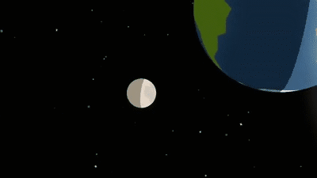

Eclipse Information
Eclipses are celestial events where one astronomical body moves into the shadow of another.
There are two main types of eclipses: solar and lunar.
During a solar eclipse, the Moon passes between the Earth and the Sun, casting a shadow on Earth.

In a lunar eclipse, the Earth passes between the Sun and the Moon, casting a shadow on the Moon.
Stars and Interesting Facts
Facts
The Sun is so large that approximately 1.3 million Earths could fit
inside it.
There are more stars in the universe than grains of sand on all the
beaches on Earth.
One day on Venus is longer than one year on Venus.
The Great Red Spot on Jupiter is a massive storm that has been
raging for at least 400 years.
The International Space Station (ISS) travels at an average speed of
28,000 kilometers per hour and orbits the Earth approximately every
90 minutes.
The largest volcano in the solar system is Olympus Mons on Mars.
Uranus is the coldest planet, with temperatures dropping as low as
-224°C.
The coldest place in the universe is the Boomerang Nebula.
Pluto was once considered the ninth planet but is now classified as
a dwarf planet.
The Milky Way galaxy is estimated to be about 13.6 billion years
old.